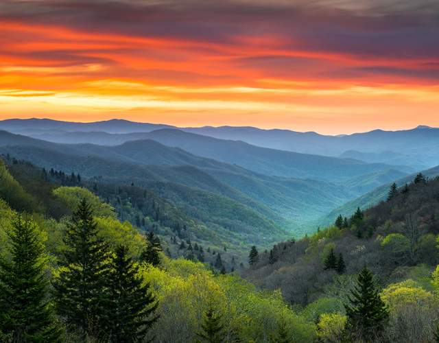
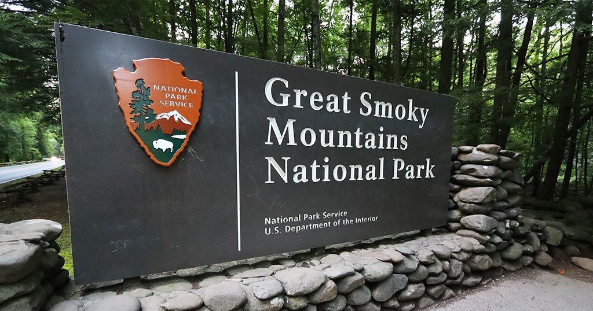

Great Smokey Mountains National Park
Great Smoky Mountains National Park is an American national park in the southeastern United States, with parts in North Carolina and Tennessee. The park straddles the ridgeline of the Great Smoky Mountains, part of the Blue Ridge Mountains, which are a division of the larger Appalachian Mountain chain. The park contains some of the highest mountains in eastern North America, including Clingmans Dome, Mount Guyot, and Mount Le Conte.
Hours

Great Smokey Mountains National Park is open 24 hours a day with primary roads never being closed off to the public
Visiting Center Hours
- Sunday: 9AM - 5PM
- Monday: 9AM - 5PM
- Tuesday: 9AM - 5PM
- Wednesday: 9AM - 5PM
- Thursday: 9AM - 5PM
- Friday: 9AM - 5PM
- Saturday: 9AM - 5PM
Pricing
Smokey Mountains National Park has no admission fee and is free to the general public
